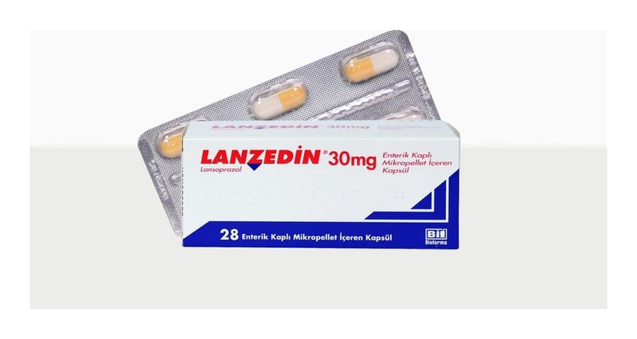

Lanzedin 30 mg Enterik Kaplı Mikropellet Kapsül, 28 Adet

Ne için kullanılır
KT · Bölüm 1• LANZEDİN®, lansoprazol etkin maddesini içerir. Bir kapsül içinde 30 mg etkin madde bulunur. Lansoprazol, proton pompası inhibitörü olarak sınıflandırılan ilaç grubuna dahildir. Proton pompası inhibitörleri mide tarafından salgılanan asit miktarını düşürür. Bu ilacı kullanmaya başlamadan önce bu KULLANMA TALİMATINI dikkatlice okuyunuz, çünkü sizin için önemli bilgiler içermektedir.
• Bu kullanma talimatını saklayınız. Daha sonra tekrar okumaya ihtiyaç duyabilirsiniz. • Eğer ilave sorularınız olursa, lütfen doktorunuza veya eczacınıza danışınız. • Bu ilaç kişisel olarak sizin için reçete edilmiştir, başkalarına vermeyiniz. • Bu ilacın kullanımı sırasında, doktora veya hastaneye gittiğinizde doktorunuza bu ilacı kullandığınızı söyleyiniz. • Bu talimatta yazılanlara aynen uyunuz. İlaç hakkında size önerilen dozun dışında yüksek veya düşük doz kullanmayınız.
• LANZEDİN®, opak sarı-beyaz kapsüller içinde bağırsakta açılan mikrokürecikler içerir. LANZEDİN®, 14 veya 28 kapsül içeren kutularda kullanıma sunulmuştur. Kapsül içeriğinde sığır kaynaklı jelatin bulunmaktadır. • LANZEDİN®, midedeki asit salgılayan hücrelerden asit salgılanmasını engelleyerek etki gösterir. • Duodenal (oniki parmak bağırsağı) ve mide ülserlerinin engellenmesi ve tedavisinde, • Yemek borusu iltihabının (reflü özofajit) tedavisinde, • Midede ve oniki parmak bağırsağında ülser oluşumundan sorumlu tutulan Helicobacter pylori enfeksiyonundan kaynaklanan ülser tedavisinde, • Steroid olmayan yangı giderici ilaçların (aspirin, ibuprofen, ketoprofen ve piroksikam gibi) neden olduğu ülserlerin engellenmesi ve tedavisinde, • Gastroözofageal reflü hastalığında (bu hastalıkta mide asidi yemek borusuna kaçarak hasara ve iltihaplanmaya sebep olur), • Yemek borusundaki aside bağlı hasarın (eroziv özofajit) tedavisinde, • Midedeki aşırı asit salgılanmasının engellenmesinde (Zollinger-Ellison Sendromu dahil patolojik hipersekresyon durumları) kullanılmaktadır.